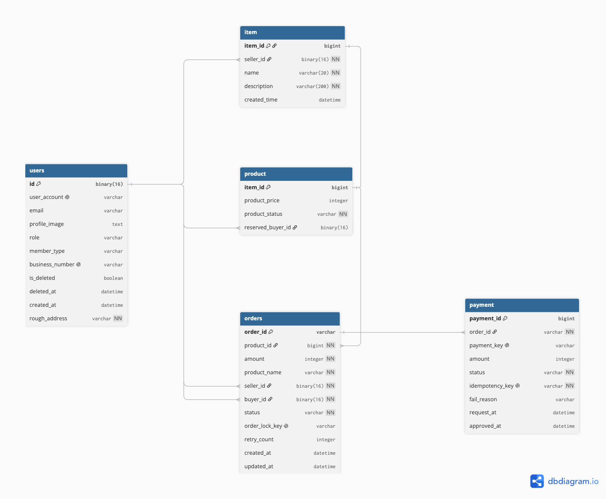
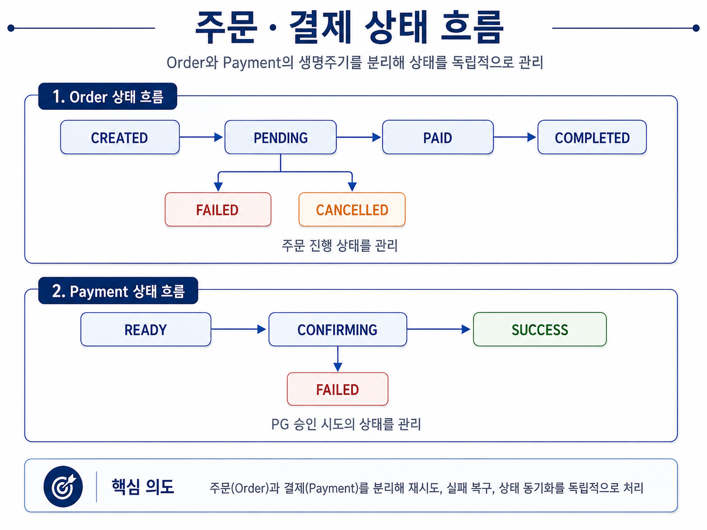
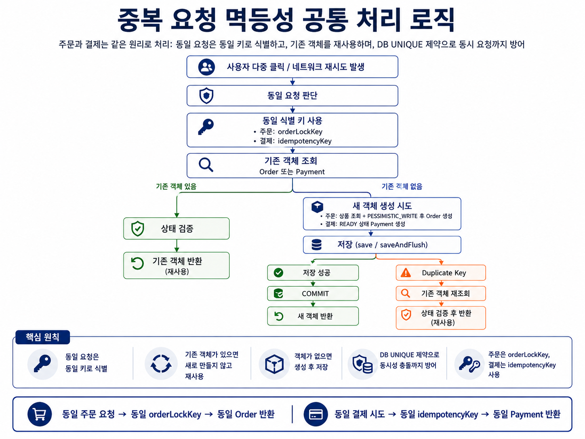
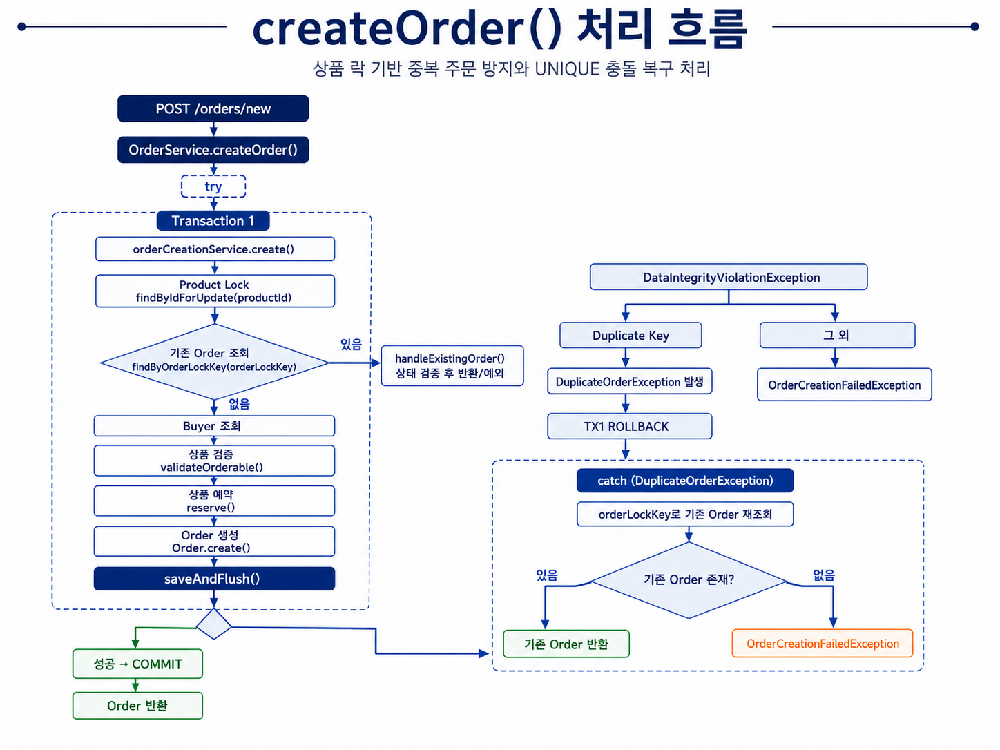
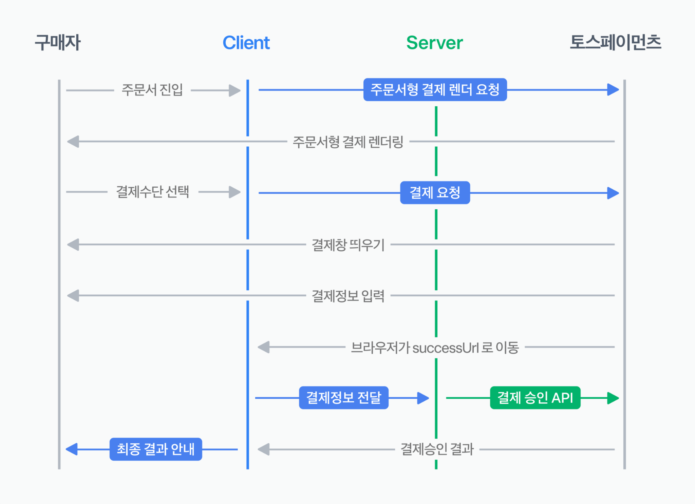
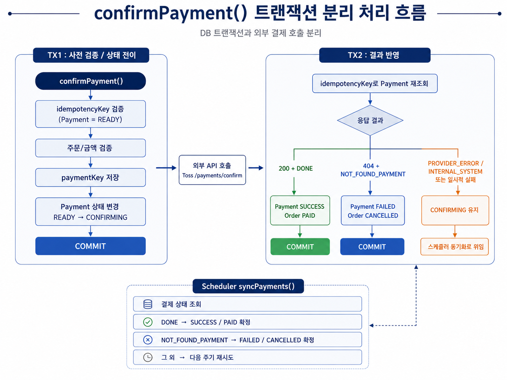
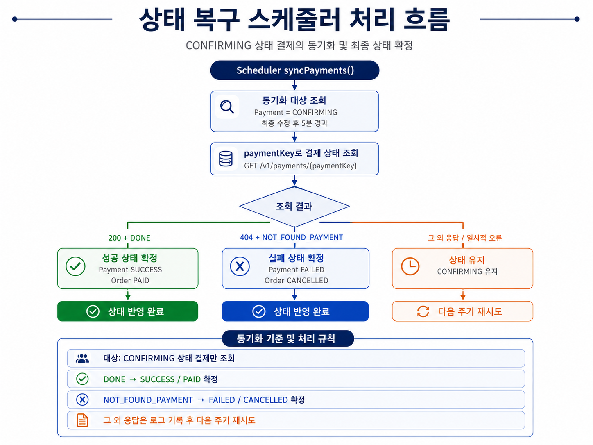
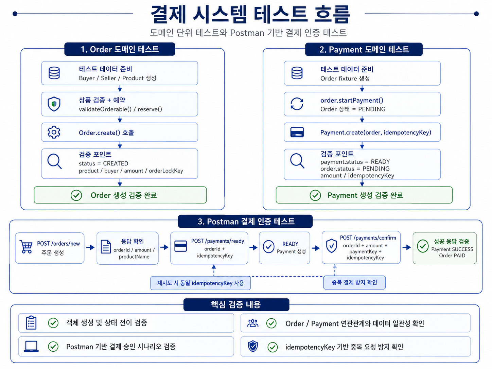
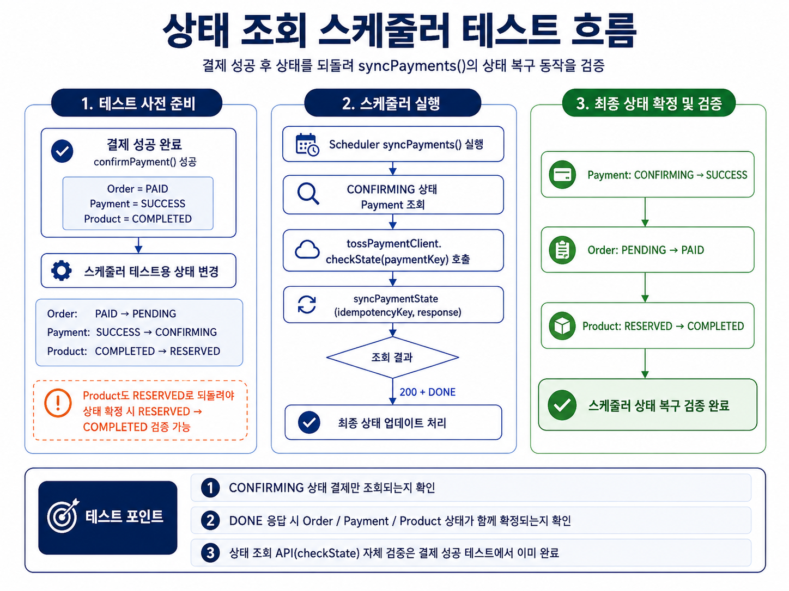

"데이터 일관성과 장애 상황을 고려해 신뢰할 수 있는 백엔드 시스템을 구축하기 위한 기술 스택을 갖추고 있습니다."
Backend
JavaSpring BootJPATransactionConcurrency
Databases
MySQL
DevOps & Tools
Git
Testing
JUnit
Featured Projects
"백엔드 엔지니어링, 분산 트랜잭션,
시스템 신뢰성을 주제로 진행한 대표 프로젝트입니다."
2025.08 ~ 2025.11 — 개인 프로젝트
Reliable Payment System
Spring Boot와 Toss Payments API를 활용하여
동시성 제어 및 결제 실패 복구 메커니즘을 갖춘 결제 시스템
을 구축했습니다.
주문과 결제 시도를 분리하고
멱등성 키, 비관적 락(Pessimistic Lock), 트랜잭션 분리
를 통해 외부 API 장애 시에도 데이터 일관성을 유지하도록 설계했습니다.
담당
주문·결제 아키텍처 설계 · 결제 멱등성 및 동시성 제어 ·
외부 PG 연동 · 트랜잭션 예외 처리
중고거래 서비스의 주문·결제 흐름에서
중복 요청, 동시 구매, 외부 PG 장애 상황까지 고려해
데이터 일관성과 복구 가능성을 중심으로 설계한 결제 시스템입니다.
처음부터 주문과 결제를 분리해서 설계했습니다
주문은 사용자가 상품을 구매하겠다는 의사를 표현한 상태이고,
결제는 실제 PG 승인 시도라는 점에서 생명주기가 다르다고 판단했습니다.
따라서 Order와 Payment를 분리하고,
하나의 주문에 여러 결제 시도가 존재할 수 있도록 설계해
재시도와 실패 복구를 독립적으로 처리할 수 있게 했습니다.

주문과 결제의 상태를 분리해 각각의 생명주기를 관리했습니다
Order와 Payment는 서로 다른 시점에 상태가 변경되기 때문에
하나의 상태로 관리하지 않고 각각의 상태 모델을 정의했습니다.
주문은 상품 구매 진행 상태를 나타내고,
결제는 실제 PG 승인 시도의 결과를 나타냅니다.
이를 통해 결제 실패나 재시도가 발생하더라도
주문과 결제 상태를 독립적으로 제어할 수 있도록 했습니다.

중복 요청은 멱등성 키로 같은 시도로 묶었습니다
사용자가 주문, 결제 버튼을 여러 번 누르거나 네트워크 재시도가 발생해도
새로운 주문과 결제가 계속 생성되지 않도록
orderLockKey와 idempotencyKey를 각각 주문과 결제 요청의 식별자로 사용했습니다.
서버에서는 동일한 키의 객체가 이미 존재하면
기존 객체 정보를 반환하고,
DB에는 UNIQUE 제약을 두어 동시에 같은 요청이 들어오는 상황까지 방어했습니다.

같은 상품의 동시 구매는 비관적 락으로 직렬화했습니다
두 사용자가 거의 동시에 같은 상품의 주문을 생성하면
두 주문 모두 성공하는 경쟁 상태가 발생할 수 있습니다.
상품 조회 시 PESSIMISTIC_WRITE 락을 획득한 뒤
주문 가능 여부와 기존 진행 주문을 확인하고,
예약 상태 변경까지 하나의 트랜잭션 안에서 처리했습니다.
주문 생성 중 예외가 발생하는 경우 기존 트랜잭션을 롤백하여 처리하도록 함수를 분리하였습니다.

외부 PG 호출은 DB 트랜잭션과 분리했습니다
Toss Payments와 같은 외부 API 호출을
DB 트랜잭션 내부에서 수행하면
외부 네트워크 지연만큼 DB 락이 오래 유지될 수 있습니다.
이를 줄이기 위해 결제 승인 과정을
prepare → PG 호출 → result 반영
단계로 분리했습니다.
TX1: 결제 데이터 검증 및 CONFIRMING 상태 기록
외부 호출: Toss Payments 승인 API 요청
TX2: 성공/실패 결과를 다시 조회하여 상태 반영


결과를 확정할 수 없는 결제는 스케줄러가 다시 확인합니다
외부 API 호출 중 타임아웃이나 네트워크 오류가 발생하면
클라이언트 입장에서는 실패처럼 보이지만,
실제 PG 서버에서는 승인이 완료되었을 가능성이 있습니다.
그래서 결과가 불확실한 상황에서는
Payment와 Order를 CONFIRMING, PENDING 상태로 유지하고
바로 실패로 단정하지 않았습니다.
일정 시간 이상 CONFIRMING 상태로 남아 있는 Payment는
스케줄러가 Toss Payments 결제 조회 API로 최종 상태를 다시 확인합니다.
DONE이면 SUCCESS / PAID로 확정하고,
NOT_FOUND_PAYMENT인 경우에만 FAILED / CANCELLED로 확정하며,
그 외의 불확실한 응답은 다음 주기에 다시 확인합니다.

도메인 단위 테스트와 결제 시나리오 테스트로 설계 의도를 검증했습니다
Order와 Payment의 생성 규칙과 상태 전이는
도메인 단위 테스트로 검증했습니다.
이후 Postman으로
주문 생성 → 결제 준비 → 결제 승인의 전체 흐름을 테스트하고,
동일 idempotencyKey 요청 시 기존 Payment가 재사용되는지와
최종 상태가 SUCCESS / PAID로 정상 전이되는지 확인했습니다.
스케줄러 테스트에서는 결제 성공 후 상태를
Order=PENDING, Payment=CONFIRMING, Product=RESERVED로 되돌린 뒤,
PG의 DONE 응답을 기준으로 각각
PAID, SUCCESS, COMPLETED 상태로 복구되는지 검증했습니다.


핵심적으로 검증하고 싶었던 것은 “실패해도 복구 가능한가”였습니다
단순히 정상적인 결제 성공 흐름을 구현하는 것보다,
중복 요청이나 동시성 충돌, 외부 장애가 발생했을 때도
상태가 잘못 확정되지 않고 다시 복구 가능한 구조를 만드는 데 집중했습니다.